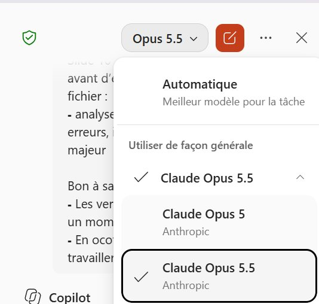
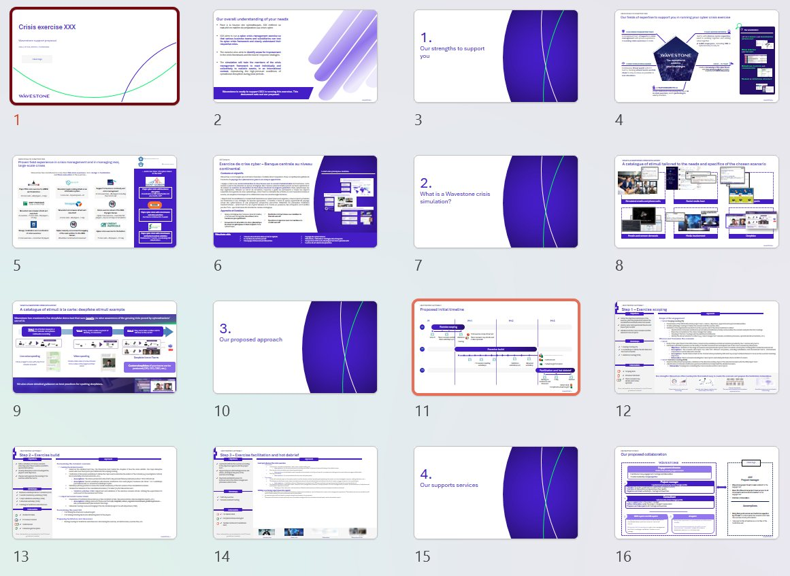
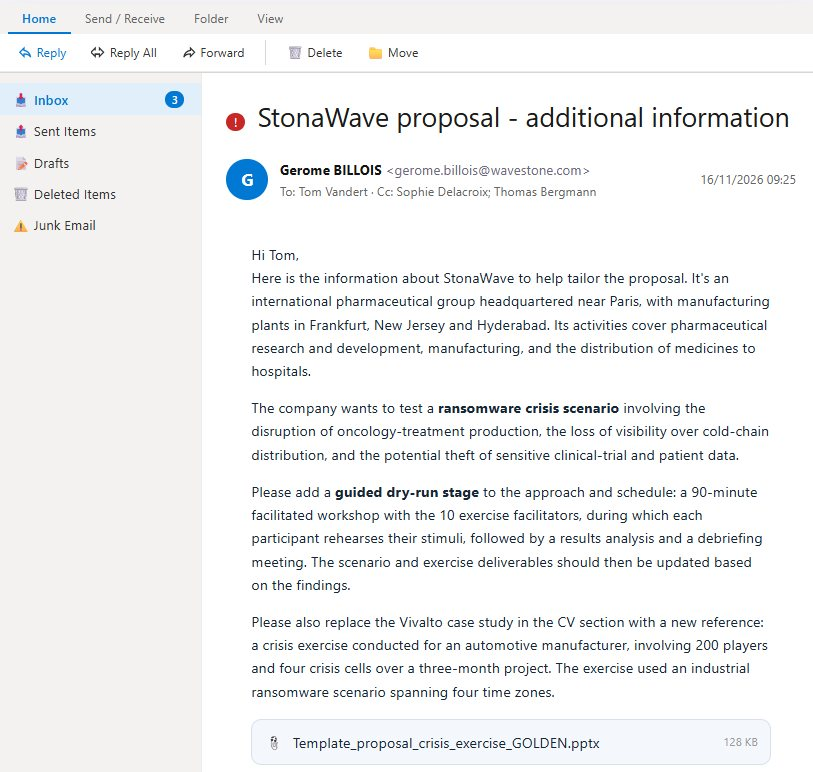
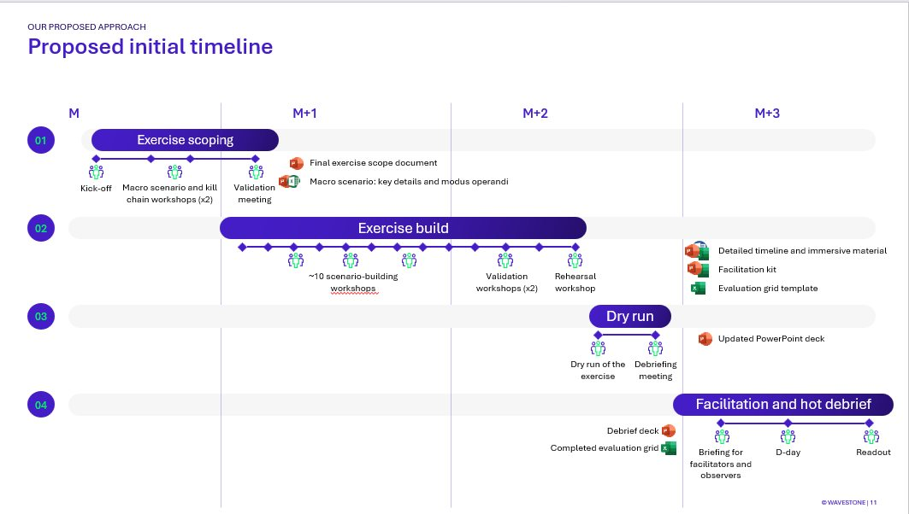
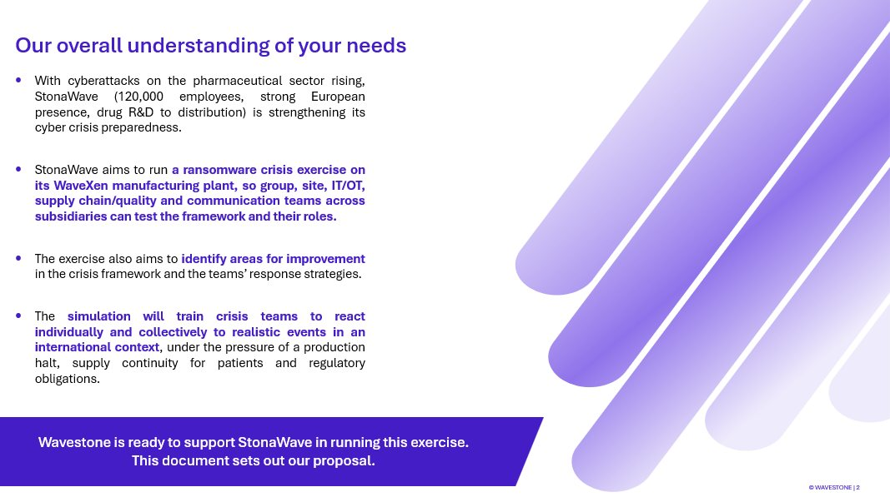
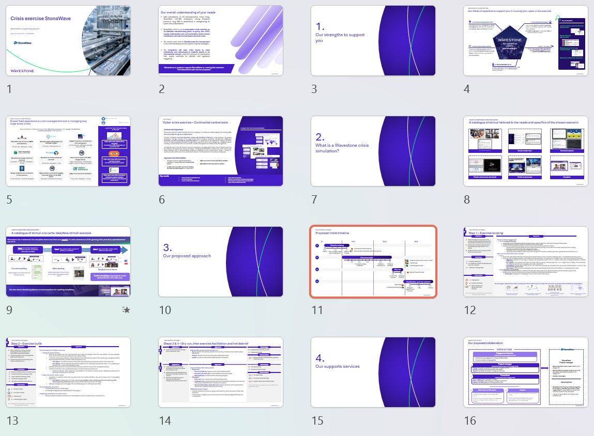
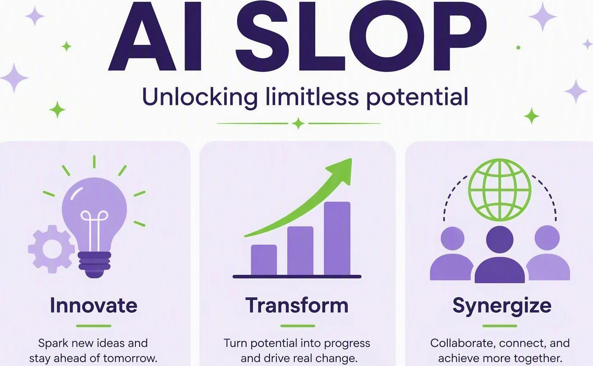

Avant, des slides génériques. Aujourd’hui, des slides vraiment utilisables.
On demandait une présentation et on obtenait un titre, quelques puces génériques et trois boîtes « Step 1, Step 2, Step 3 ». Techniquement une slide, mais l’essentiel du travail restait à faire. Aujourd’hui, le résultat n’a plus rien à voir.
Soyons honnêtes : pendant longtemps, Copilot, c’était ça…
Une slide générique, sans message clair ni mise en page adaptée au contenu.
Copilot peut créer des slides comme celles-ci !


Et c’est aussi très utile pour modifier des slides existantes ! C’est l’angle de ce use case : partir de ce qu’on a déjà (une propale, un template) et demander à Copilot de l’améliorer.
Deux raisons principales
Une meilleure orchestration agentique
Copilot planifie et enchaîne lui-même les actions sur ta présentation, au lieu de s’arrêter après une tâche isolée.
Des modèles plus puissants dans PowerPoint
Des modèles qui comprennent une mise en page et produisent des slides de qualité.


GPT 6.1 Sol fonctionne, mais manque de goût en design. Inutile d’apprendre les noms par cœur : le bon réflexe est de vérifier le modèle sélectionné en haut du volet, surtout quand la demande touche à la mise en page, puis de regarder le résultat d’un œil critique.
Par où commencer et où travailler ?
Deux façons de travailler. La vraie différence, c’est le fichier : est-ce que je modifie ce fichier, ou est-ce que je suis en train de créer une autre version ?
Dans PowerPoint
- Même fichier : les modifications arrivent dans ton deck ouvert
- Fonctionne en co-édition, idéal pour les retouches rapides
- Tu valides ou tu annules directement dans PowerPoint
App Copilot desktop & mobile
- Travaille sur une copie : plus rapide sur les gros chantiers
- Pas de co-édition : il faut télécharger le nouveau fichier
- Puis réintégrer le travail à la main dans ton deck d’origine
On travaille dans PowerPoint, avec le volet Copilot : chaque modification arrive directement dans la propale ouverte, on la relit, puis on la garde ou on l’annule.
Rédiger une propale de gestion de crise pour un nouveau client
Point de départ très familier : un template « à peu près bon » et un premier jet des besoins du client (StonaWave, groupe pharmaceutique fictif). Le template donne la structure, les besoins disent ce qu’il faut à ce client. Notre travail : réunir les deux dans une propale cohérente.




On ouvre PowerPoint et on clique sur Copilot !

Tout se passe dans le volet latéral

Le volet reste ouvert pendant que tu travailles : chaque modification arrive directement dans ton deck ouvert.
Adapter le contenu et la forme
J’adapte ma propale au client Toutes les slides
Tous les « XXX » deviennent StonaWave, le texte est adapté au contexte pharma (120 000 collaborateurs, R&D, fabrication, distribution) et au scénario ransomware sur l’usine WaveXen. Il corrige au passage des restes d’autres propales : « Clarins », « CNAM lead for Lot 1 », une phrase en français en slide 2.
J’ajoute le logo du client Toutes les slides
Slides 1 et 16 : le logo StonaWave remplace l’espace réservé « Client logo ».
Je traduis une référence Slide 6
Toute la slide est traduite en anglais, titre compris.
Je réorganise la mise en page Slide 8
Chaque image est placée dans son bloc : tailles cohérentes, alignement régulier, espacement égal.
J’ajoute une animation Slide 9
Les colonnes Step 1, 2 et 3 apparaissent l’une après l’autre, au clic (effet fondu). À vérifier en mode diaporama.
Les numéros de slide cités dans les prompts renvoient à la propale d’exemple. Ils montrent le niveau de détail à donner : adapte-les à ton propre deck.
Faire évoluer la structure et relire
J’ajoute une étape au planning visuel Slide 11
Nouvelle phase 03 « Dry run » (répétition + débriefing, livrable : PowerPoint mis à jour). L’ancienne 03 devient 04.
J’ajoute une étape à la démarche Slide 14
Étapes 3 et 4 sur deux bandeaux : répétition avec les 10 complices, puis animation condensée. Les miniatures de stimuli sont retirées.
Je mets à jour un CV Slide 19
Vivalto est remplacé par la référence du constructeur automobile, dans le même style (description sur une ligne).
Je vérifie la cohérence de la propale Toutes les slides
Une liste de points classés par priorité. Le détail est plus bas : son verdict sur la propale.
J’ajoute un visuel Slide 1
Titre « Crisis exercise StonaWave » et image générée d’une ligne de fabrication de médicaments, recadrée sur les machines.
Un deck complet et adapté au client !
Une propale adaptée au client d’exemple, avec des changements sur le fond comme sur la forme. Deux questions à séparer : a-t-on un brouillon complet pour travailler ? Oui. Est-il prêt à envoyer ? Pas encore.







Copilot a raisonné en 23 étapes et indique dans le chat ce qu’il dit avoir changé, slide par slide (repris dans les encadrés verts ci-dessus). Sers-t’en comme checklist : si le journal dit que les images sont alignées, regarde la slide ; s’il dit que les phases sont renumérotées, vérifie la séquence ; pour une animation, teste en mode diaporama. Le journal aide à relire, il ne remplace pas la relecture.
Et son verdict sur la propale… encore du travail 🙂
Réponse au prompt de l’étape 9. Pas besoin de tout lire : l’idée est de demander une relecture priorisée, puis de vérifier soi-même les constats.
Priorité haute
- Le budget oublie le dry run. Le tableau détaille encore 3 étapes, pour un total de 69 600,00 € HT, alors que la démarche en compte désormais 4. Le dry run doit être chiffré et le total revu.
- Le nombre de complices ne colle pas. Le dry run implique 10 complices, mais l’animation n’en prévoit que 2 côté StonaWave (environ 7 animateurs au total).
- Le nombre d’ateliers de cadrage varie : « 2-3 ateliers » en étape 1, « (x2) » dans le planning. La phase de construction mentionne « 2 scénarios (2x5) » alors que la propale couvre un seul scénario.
- La page de garde n’a ni date ni référence d’offre à jour (« Date | OFR24-200925 »).
- La slide 20 est vide. Il faut une page de contact ou de conclusion.
Priorité moyenne
- Les références ne sont pas assez ciblées. Le cas mis en avant est une banque centrale et une sensibilisation du conseil, pas un exercice industriel. Une référence pharma ou industrielle (ransomware sur un environnement OT) rendrait l’offre plus convaincante.
- L’équipe n’est pas nommée. Un seul CV « exemple » (consultant). Il manque ceux du directeur de mission et du chef de projet.
- Les frais de déplacement supposent une mission en Île-de-France. Préciser où se trouve l’usine WaveXen et s’il y a une animation sur site.
- L’exemple de deepfake (demande de virement frauduleuse) n’est pas relié au scénario ransomware. Il pourrait devenir un faux appel du directeur de l’usine.
Finitions
- Slide 15 : « Our supports services » doit devenir « Our support services ».
- Slide 4 : il manque la majuscule à « list of scenarios… ».
- Slide 14 : les notes contiennent une ligne restante d’un autre projet (« 4 clients types… »).
- Slide 16 : le logo StonaWave chevauche le cadre en pointillés. Il suffit d’ajouter un fond blanc derrière, comme pour le logo Wavestone.
Je peux ajouter la ligne du dry run au tableau de prix et aligner le nombre de complices, si tu me donnes le montant à utiliser.
Copilot nous demande le montant à mettre au budget : cette décision nous revient. Les chiffres et les numéros de slide ci-dessus concernent la propale d’exemple.
Don’t worry, be happy !
Pour un usage quotidien et raisonnable. Le bon rythme : demander, relire, affiner. On peut expérimenter sans accepter chaque premier jet.
Pas de peur : Ctrl+Z fonctionne
Toute modification de Copilot s’annule comme n’importe quelle autre, y compris en lui demandant d’annuler ce qu’il a fait. Tu peux aussi lui demander de dupliquer ta slide pour garder l’original sous les yeux.
Ça n’a pas marché ? Reformule
Même demande, en plus précis : en général, la deuxième fois est la bonne. « Fais plus joli » laisse tout ouvert, « 3 colonnes, comme la slide 7 » donne une direction claire.
Ne co-travaille pas sur la même slide
Ne modifie pas et ne réordonne pas les slides sur lesquelles Copilot est en train de travailler. Laisse-le finir, relis le résultat, puis reprends la main.
Aller plus loin
Copilot est là, dans tes outils, et travaille avec tes données. Choisis une tâche, donne-lui la bonne matière et regarde ce qui t’aide.
Fais toujours une vérification finale
Demande à Copilot de repérer les erreurs, les incohérences et les manques majeurs. Puis relis toi-même ses constats.
Un appel d’offres ? Donne-le à Copilot !
Colle le cahier des charges et demande-lui de mettre à jour ta propale. À la fin, n’oublie pas de lui poser la question de la couverture.
Word, Excel… ça marche aussi !
Écris ton plan dans Word et demande à Copilot d’y adapter les slides. Ou donne-lui ta propale et demande un tableau de charge dans Excel, en vérifiant les hypothèses d’effort avant de l’utiliser. Essaie avec tes propres fichiers !
Copilot est là pour t’aider, pas pour te rendre bête :D
Utilise-le avec discernement. Pense à la planète !
Utilise Copilot pour les modifications conséquentes. Pour changer deux mots ou une animation, fais-le toi-même.
Tu veux éviter le « look IA » ?
Trouve simplement une slide que tu aimes et demande à Copilot d’adapter ton contenu à cette mise en page. Inutile de décrire tout le design.


Relis chaque slide. Vraiment.
Lis tout avant d’envoyer. Revérifie les noms et les chiffres pour débusquer ce qui aurait été inventé, et les détails qui n’ont rien à faire dans la propale.
Copilot est utile !
Mettons-le au travail sur notre prochain deck. Et partageons les prompts et astuces qui marchent pour nous !